Onboarding
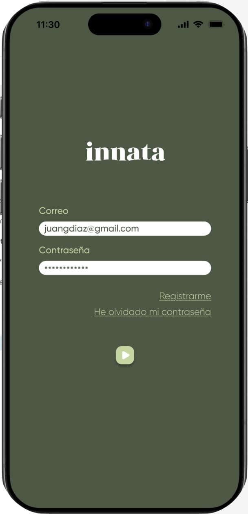
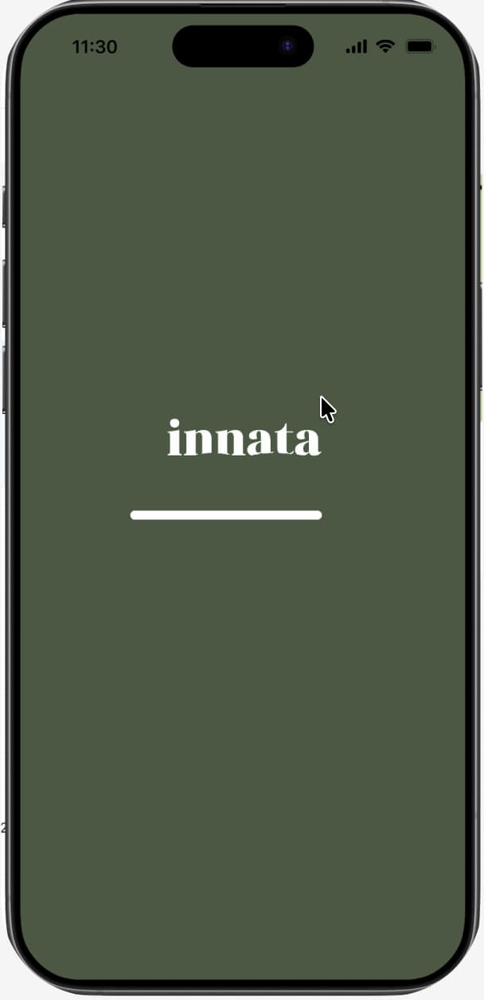
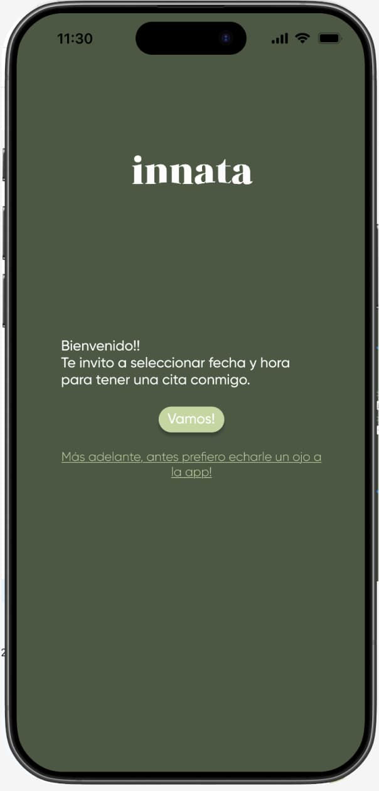
Innata es una app creada para acompañar a cada paciente en su proceso nutricional con un enfoque basado en la dieta cetogénica y el ayuno. Es una herramienta para seguir una dieta consciente y seguimiento personalizado.
Desde la app, cada usuario puede acceder a su dieta semanal, visualizar su evolución con fotos de antes, durante y después, y recibir recordatorios adaptados a su plan. Además, incluye contenidos breves y claros sobre temas clave como el impacto de la cetosis, el rol del músculo en la pérdida de grasa o la gestión de electrolitos.



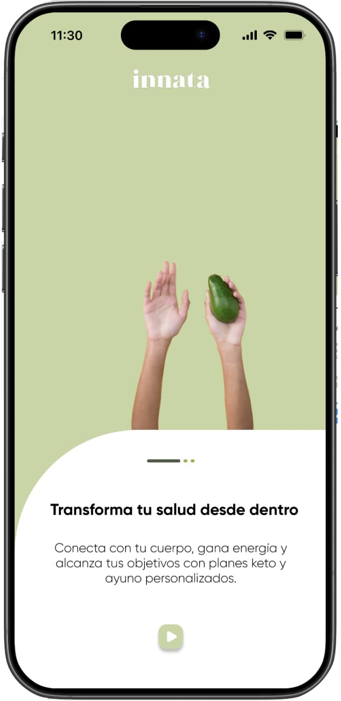
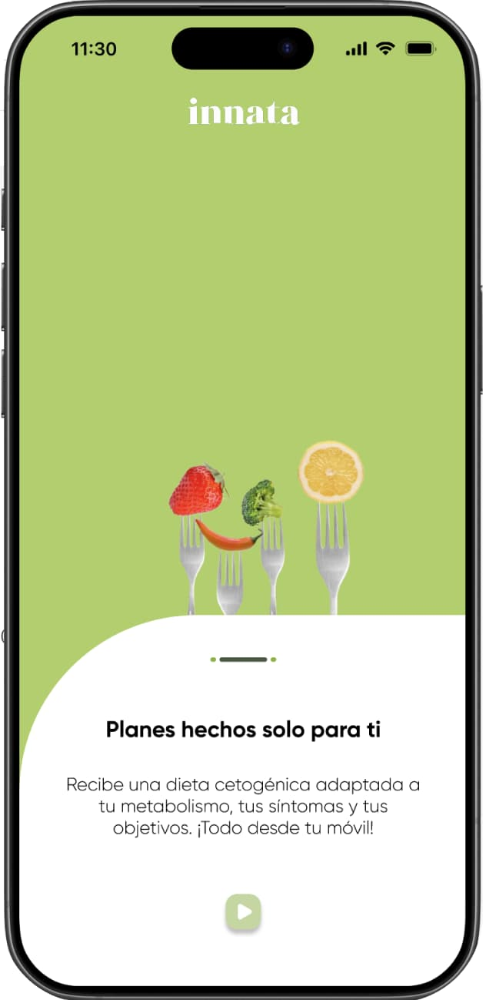
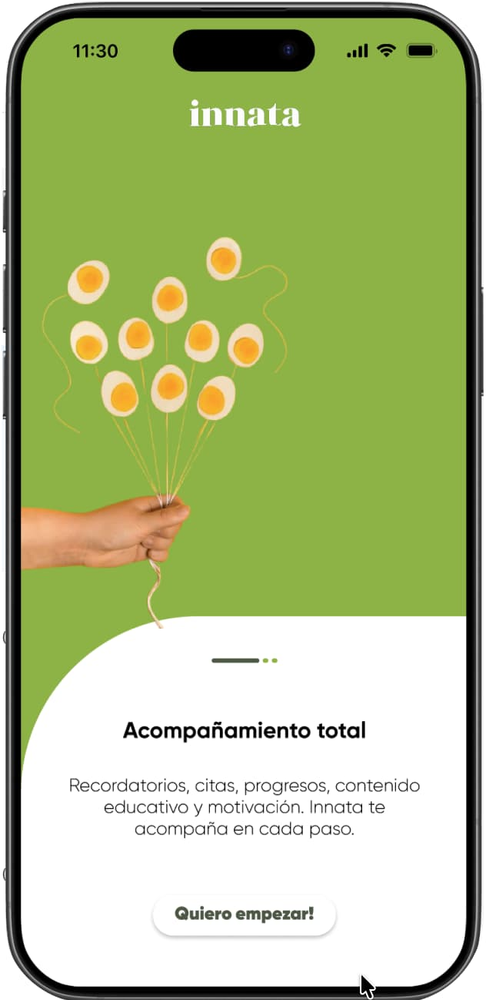
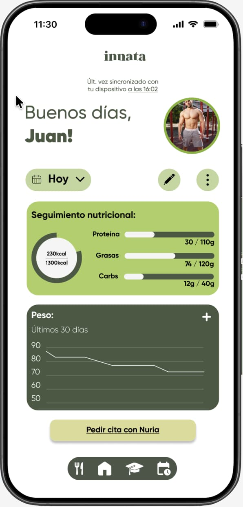
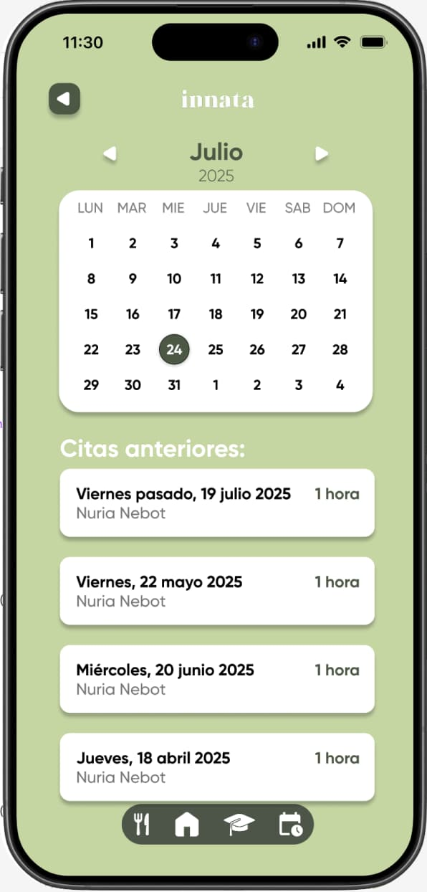
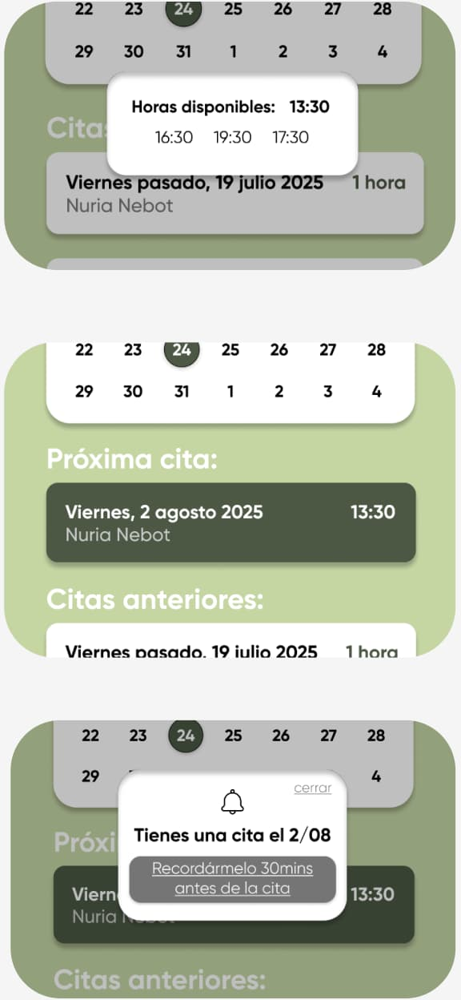
Diseñar/Sistema de diseño/ Variables y estilos

Diseñar/ Wireframes
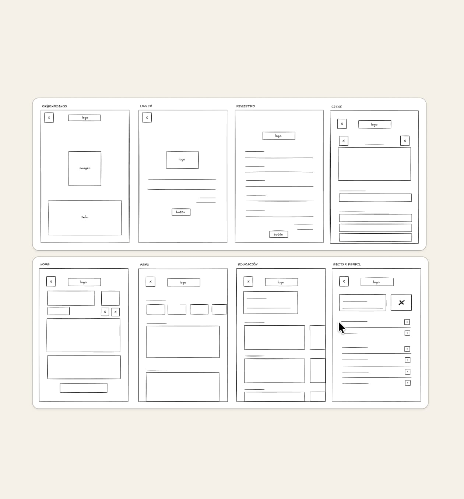
Diseñar/
Testing con
usuarios
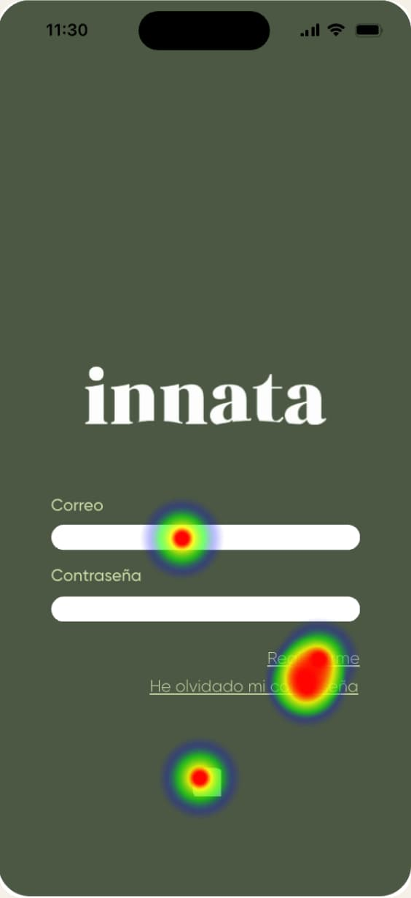
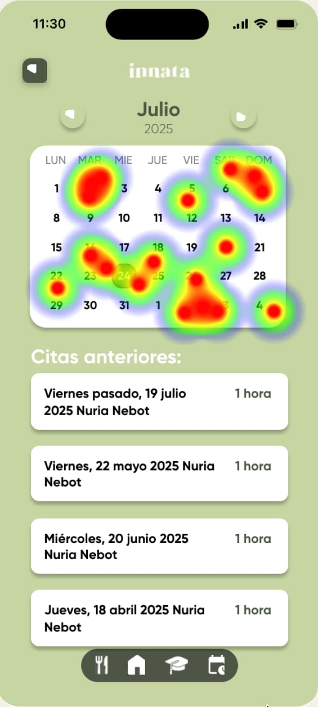
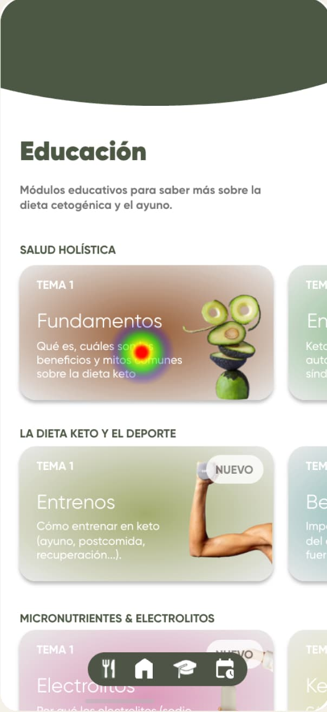
Diseñar/Sistema de diseño/ Componentes
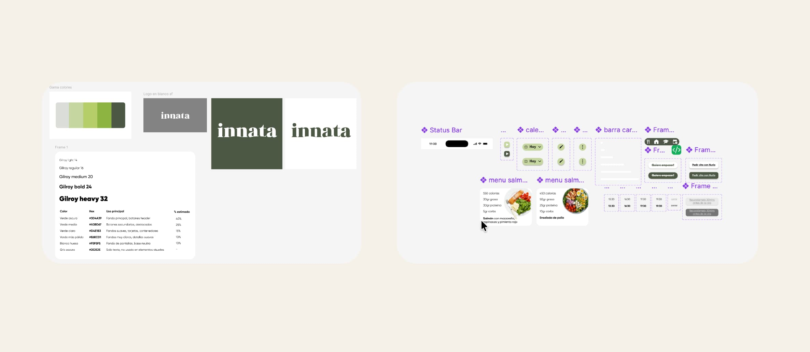